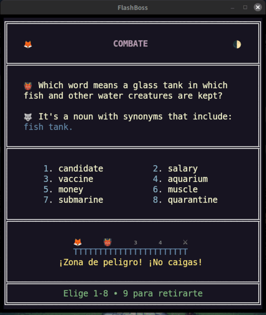

Inglés · seis pasos · un camino
El sistema de inmersión en inglés
un camino, seis pasos
Sea el inglés tu primera lengua o la segunda: un camino de seis pasos que atraviesa la supervivencia y sale por el otro lado del dominio. Dos pasos vienen gratis con el juego. Cuatro son los paquetes Roots. Cada tarjeta está en inglés, enseñada en inglés.
Un camino, seis pasos
El juego base contiene el piso y el techo de un curso de inmersión normal. Dos paquetes Roots quedan dentro, dos quedan más allá. Lee la escalera de arriba abajo.
Empieza por Advance si la escuela te falló o si el inglés es nuevo para ti. Si no, empieza por Norman Roots y sigue después con German Roots.
El español es una lengua romance, así que la capa normanda del inglés es la mitad que ya reconoces: por eso va antes que German Roots.
El juego base tiene el piso y el techo. German Roots y Norman Roots quedan dentro del curso. Latin Roots y Greek Roots quedan más allá. English Advance es opcional si tuviste una educación escolar normal. Latin Roots y Greek Roots son opcionales por completo. No hay obligación de tomar los paquetes en orden; la escalera es una recomendación.
Las dos capas de las que el inglés está hecho
German Roots y Norman Roots son el par que está dentro del curso. Son las dos capas con las que el inglés está cosido — la que conservó de antes de 1066 y la que llegó con la Conquista — y quedan entre English Advance y English Adept.
Son la razón de que el inglés tenga begin y commence, ask y demand. Al terminar German Roots ves la costura de una palabra compuesta y lees el significado en ella. Al terminar Norman Roots lees la segunda capa del inglés como una capa, no como una lista de palabras difíciles.
La columna germánica del inglés cotidiano — las palabras que ya conoces a medias. Por aquí empieza quien habla una lengua germánica, y es lo normal para todos los demás.
Más información →El segundo inglés — 1066 y el francés que vino con él. Por aquí empieza quien habla una lengua romance.
Más información →Pasado el techo, para los curiosos
Latin Roots y Greek Roots son el par que queda más allá del curso. Vienen después de English Adept, para quien quiera la capa culta y el vocabulario de las ciencias. Una afición para los curiosos de la lengua, y no vale menos por eso.
Parte del curso, y más lejos de lo que nadie necesita. Al terminar ese par, una palabra técnica o literaria desconocida ya no es desconocida: la desarmas a simple vista, y las fronteras entre las lenguas europeas empiezan a parecerse a fronteras entre dialectos.
El inglés construido a partir de sus piezas — la capa clásica y científica, ensamblada. Cada tarjeta enseña una palabra prima junto a la palabra principal.
Más información →El vocabulario de la ciencia, la medicina y la abstracción — la capa por encima del latín, con el alfabeto griego en la tarjeta.
Más información →Latin Roots y Greek Roots vienen después de Adept, en el orden que prefieras.
Qué incluye
Contado desde los árboles de los paquetes, no desde el texto publicitario. Cinco niveles en cada paquete. Un boss fight al final de cada cluster.
| Paso | Tarjetas | Palabras | Clusters | Lecciones | Viene como |
|---|---|---|---|---|---|
| English Advance | 500 | 500 | 25 | 15 | juego base |
| German Roots | 1.000 | 1.000 | 47 | 48 | DLC |
| Norman Roots | 1.000 | 1.000 | 48 | 49 | DLC |
| English Adept | 1.000 | 1.000 | 56 | 12 | juego base |
| Latin Roots | 500 | 1.000 | 30 | 31 | DLC |
| Greek Roots | 1.000 | 1.000 | 56 | 62 | DLC |
Latin Roots tiene 500 tarjetas porque cada una de las 500 enseña una palabra prima junto a la palabra principal: 1.000 palabras. Donde un paso muestra menos lecciones que clusters (Advance, Adept), sus lecciones abren capítulo en vez de haber una puerta en cada cluster; los cuatro paquetes Roots llevan una lección en la puerta de cada cluster, y ahí las lecciones son obligatorias.
En cada tarjeta, en cada paso
La misma anatomía de tarjeta desde el piso hasta la última raíz griega.
La tarjeta
- la palabra principal, en inglés
- una definición, en inglés — nunca una traducción
- una frase de ejemplo
- un segundo ejemplo — la misma palabra otra vez, o una palabra emparentada, la prima o el gemelo que las notas explican después
- una línea de Notes: categoría gramatical, las piezas de las que está hecha la palabra, el étimo
- sinónimos en cada tarjeta de Adept, German Roots, Norman Roots y Greek Roots; antónimos donde existe uno verdadero
- la división entre ortografía británica y estadounidense, como una capa — ver más abajo
La mecánica
- boss fight al final de cada cluster — ocho palabras principales en la cuadrícula, respondidas en el teclado numérico
- repetición espaciada de Fibonacci entre combates
- lección en la puerta de cada cluster en los cuatro paquetes Roots
- tres ejercicios de repaso por paquete: el estante de raíces, antónimos y completar huecos en German, Latin y Greek Roots; dictado en lugar del estante para Norman Roots (sus tarjetas son palabras sueltas del francés antiguo, no sumas) y para Adept
Cada cluster termina en un boss fight
Ocho palabras principales en la cuadrícula, respondidas en el teclado numérico. Una respuesta correcta te adelanta una posición.
Una equivocada te manda dos posiciones atrás, y las tarjetas que peor llevas son justo las que esperan en las posiciones tres y cuatro — así que un cluster no se vence hasta que se vencen sus palabras más difíciles.
Vence el combate y esas tarjetas dejan tu mazo diario para siempre.

probar demoInglés, digan lo que digan los menús
El texto de las tarjetas está en inglés, sea cual sea el idioma de la interfaz. La interfaz, los nombres de los clusters y las lecciones de Advance están traducidos al alemán, el español, el japonés, el ruso y el chino. Las tarjetas nunca lo están — ni una sola tarjeta de los seis paquetes lleva un campo en otro idioma. Eso es justo lo que hace la palabra inmersión en esta página.
Cada paquete trae la división entre la ortografía británica y la estadounidense como una capa: un gemelo británico de la palabra principal, de las dos frases de ejemplo, de la definición y de las notas, allí donde el texto británico difiere del estadounidense, según tu preferencia de ortografía o tu voz en inglés.
Seis pasos, una serie
Los seis pasos son una sola serie: los cuatro DLC Roots — German y Norman dentro del curso, Latin y Greek más allá — junto con el juego base que lleva dentro English Advance y English Adept. Tomados como serie, el piso, las dos capas del inglés, el techo y los dos Roots que quedan detrás llegan como un solo curso y no como seis paquetes sueltos. Disponible en Steam.
FlashBoss Raíces — La serie completa son los cinco artículos en uno: el juego base, que lleva dentro English Advance y English Adept gratis, y los cuatro paquetes Roots. ¿Ya tienes parte del conjunto? Steam solo te cobra lo que falta.
Empieza donde dice la escalera.
El piso y el techo vienen gratis con el juego. Los cuatro paquetes Roots están en Steam, juntos o de uno en uno.
FlashBoss Raíces — La serie completa →Scientia est Potentia.El conocimiento es poder